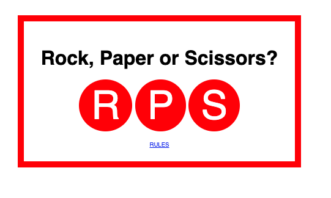

Webpage design version 2 Project
 https://github.com/MorPhe23/Webpagedesign_V2.git
https://github.com/MorPhe23/Webpagedesign_V2.git
Description
This is an HTML document that structures a webpage with a header, three sections, and a footer. It discusses web design, content, and technologies used. The document references an external CSS file that sets the layout, spacing, and background color of the page, and includes comments on design strategies and color theory.
Techniques
This code uses HTML and CSS to structure and style a basic web page. HTML5 semantic tags and links to external CSS are used to give meaning and apply styles to specific HTML elements. CSS properties and relative units are used to change the appearance and layout of the page, with comments providing guidance on web page design.
Technologies
The technologies used to create this web page are HTML5 and CSS3. HTML5 is used for structuring the content of the page, while CSS3 is used for styling the content and layout of the page. The HTML code provides the basic structure of the page, including the header, sections, and footer, while the CSS code provides the visual design elements, such as the font styles, colors, and layout. Additionally, the web page includes images that are linked to external sources, and it uses a Creative Commons license for copyright purposes.
Rock, Paper, Scissors Project
https://github.com/MorPhe23/rps.git
Description
This code defines a web page with clickable circles representing rock, paper, and scissors and a link to the game rules. The JavaScript file contains two functions: say, which converts a message into synthesized speech using the SpeechSynthesis API, and play, which is a simplified version of the game that determines the user's win, loss, or tie with the computer (which always chooses rock), displays an alert message, and calls the say function to read the message aloud. The CSS rules define the visual style of the page, including the appearance of the circles and link. Overall, this code allows users to play a simplified version of the game and hear the result spoken aloud.
Techniques
This code combines HTML, CSS, and JavaScript to create an interactive web page that implements a simplified version of the Rock, Paper, Scissors game, with the computer always choosing rock. It also includes a text-to-speech function to announce the game result. The code uses standard web development techniques to structure the page, style the content, and add interactivity.
Technologies
The technologies used in this code are HTML, CSS, and JavaScript. The HTML code defines the structure of the web page and contains links to the CSS and JavaScript files. The CSS code sets the style and appearance of the elements on the page, such as the circles and the instruction text. The JavaScript code adds interactivity to the page, such as responding to user clicks on the circles and generating alerts with the result of the game. Additionally, the JavaScript code also uses the Web Speech API to generate text-to-speech output of the game result.
Flatland Project
 https://github.com/MorPhe23/flatland.git
https://github.com/MorPhe23/flatland.git
Description
This project involves an interactive web page called "Flatland" that enables users to explore a two-dimensional world and engage with its inhabitants. When the user clicks on the central red square, the right-hand text box displays a message containing a randomly generated buzzword phrase. Hovering over the square changes its background color to grey, which changes back to red when the cursor moves away.
Techniques
The webpage is created using HTML, CSS, and JavaScript. The HTML file defines the structure of the webpage, including the title, author, and content. The CSS file defines the styling of the webpage, including the font, size, and layout. The JavaScript file provides the interactivity of the webpage, including the ability to generate a random buzzword phrase and change the color of the square.
Technologies
The project uses HTML for creating the structure and content of the webpage, including the placement of elements and their attributes, CSS for styling the webpage with colors, fonts, and layout, and JavaScript for adding interactivity such as generating buzzword phrases or changing the color of the square. Some specific techniques used in the code include accessing and modifying HTML elements with document.getElementById() in JavaScript, registering event listeners for user actions with addEventListener(), generating random values with Math.floor() and Math.random(), and applying styles to specific HTML elements with CSS rules.
 https://github.com/MorPhe23/rss.git
https://github.com/MorPhe23/rss.git
 https://github.com/MorPhe23/todo.git
https://github.com/MorPhe23/todo.git
 https://github.com/MorPhe23/Webpagedesign
https://github.com/MorPhe23/Webpagedesign